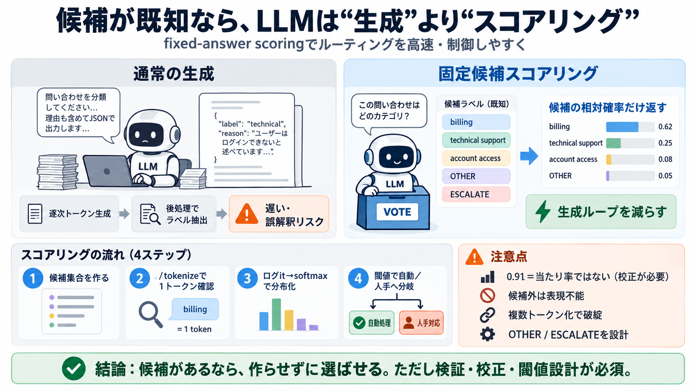

COVER
02 / 14
候補が既知なら、選択へ
LLMは
生成
より
スコアリング
出力がラベル（候補）として決まるタスクでは、文章を作らせるより確率分布を返させる方が速く効率的になり得ます。
scoring（スコアリング）／候補判定
PROBLEM
03 / 14
生成は“毎回コスト”
通常のLLM
通常のLLMは、プロンプトの続きとしてトークン単位で文章（やJSON）を生成します。すると意思決定に必要ない計算や逐次出力が増えがちです。
通常（chat/completions）
文章・JSONを生成する
後処理でラベル抽出
課題
逐次生成ループ
速度・制御・誤解釈が課題
METAPHOR
04 / 14
選ぶだけなら
投票機
候補が最初から決まっているなら、LLMを“作家”ではなく“投票機”として使えます。
max
ではなく“どれが最も適切か”の分布だけを返させます。
候補集合
billing
technical support
account access
モデルの仕事
各候補の相対スコア
softmaxで分布化
アプリの仕事
閾値・ルーティング
OTHER/ESCALATEも設計
ARCHITECTURE
05 / 14
“scoring”の芯
fixed-answer scoring
fixed-answer scoring（固定候補スコアリング）は、自由な文章生成をせず「候補トークン位置のログit」だけから確率分布を返します。見た目はJSONっぽくても内部は別物です。
fixed-answer（固定候補）
structured output（誤解ポイント）
フィールド“生成”が続く
トークン列として出力
fixed-answer scoring
候補の相対確率だけ
文章・JSON生成を減らす
EVIDENCE
06 / 14
速い理由は“生成を避ける”
レイテンシ
スコアリングでは候補間の評価だけを返すため、生成ループ（トークン逐次発生）を回避できる可能性があります。結果として応答が速くなる、という主張につながります。
latency（レイテンシ）
比較対象
chat/completions
トークンを生成し続ける
狙い
/v1/score
候補の確率分布を返す
記事では生成とスコアリングのレイテンシを比較する実験の枠組みも提示されています。
DISTINCTION
07 / 14
“0.91”の意味
相対確率
確率0.91のような値は「全体で正しい確率」を直接意味しません。候補集合（A/B/C）内での相対比率を表す前提が重要です。
calibration（校正）
誤解
0.91＝当たり率0.91
実態
候補内での相対配分
softmaxの範囲が限定
必要
校正と閾値
ラベル付きデータで調整
PROCESS
08 / 14
実装の要点
SGLang /v1/score
技術面では SGLang の
/v1/score
を用いて、QwenやDeepSeekなどのモデルで候補スコアリングする構成が示されています。
API（API呼び出し）
手順 i
候補集合を作る
例：billing / technical support / account access
手順 ii
/tokenizeで単一トークン化
ラベルが1トークンか検証
手順 iii
候補トークン位置をスコア
ログit→softmax分布
手順 iv
ラベル復元＋閾値運用
自動/人手介入の分岐
EVIDENCE
09 / 14
壊れやすい点
単一トークン
ラベルをスコアリングに使うには、それが本当に「単一トークン」になることを検証する必要があります。トークナイザ差で “billing” が複数トークンに分割されると破綻します。
tokenize（トークナイズ）
理由
候補を同一出力位置へ対応
落とし穴
空白・制御文字・分割
“同じ見た目”でも別トークン
対策
/tokenize
1トークンであることを確認
DISTINCTION
10 / 14
候補が不完全だと
逃げ道
候補集合に正解がないと、確率は必ず“誤った候補”の中で割り振られます。記事は
OTHER
や
ESCALATE
のような候補を含める対策を提案しています。
fallback（フォールバック）
問題
候補外＝表現不能
“当たってるのに当たらない”
対策
OTHER / ESCALATE
人手レビューへ逃がす
COMPARISON
11 / 14
いつ効く？いつ危ない？
適用条件
この方式は「出力空間が事前に固定でき、ラベルと確率分布だけ欲しい」状況で強い一方、自由形式の説明が必要なら生成が必要です。万能ではありません。
decision engine（意思決定）
向く用途
ルーティング／審査
サポート分類、スクリーニング等
向かない用途
未知出力の説明
自由回答や根拠文が必須
ENUMERATION
12 / 14
運用の落とし穴
校正×閾値
実運用では「精度保証は別途必要」です。候補内相対確率のため、calibration不足や閾値設計ミスは誤ルーティングを増やし得ます。
risk（リスク）
主要リスク i
確率の校正不足
0.91が“当たり率”にならない
主要リスク ii
閾値の誤設定
自動化し過ぎ／介入し過ぎ
主要リスク iii
ラベル分割（複数トークン）
/tokenizeで未検証だと破綻
主要リスク iv
候補網羅性
OTHER/ESCALATEで救済を設計
CLOSING
13 / 14
結論
“候補があるなら、選ばせる。”
LLMを生成ではなくfixed-answer scoringとして使うと、ルーティング等で速度・制御性を得られる可能性があります。
ただし単一トークン検証、calibration、閾値、候補の網羅性（OTHER/ESCALATE）を先に設計して、慎重に検証する必要があります。
verification（検証）
REFERENCES
14 / 14
References
Search failed